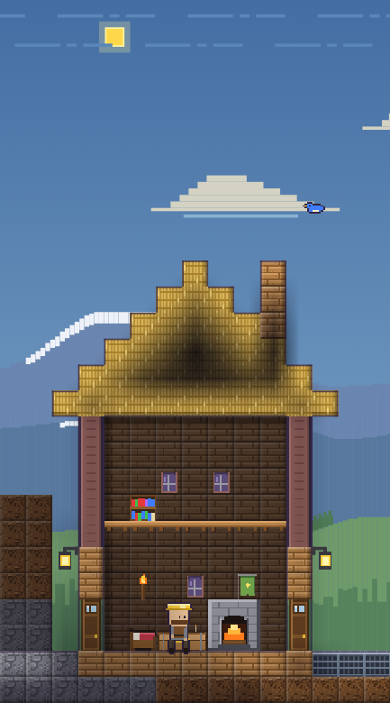
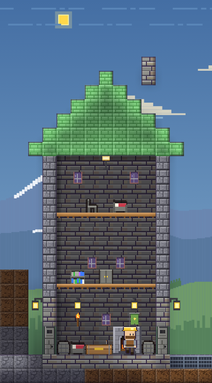
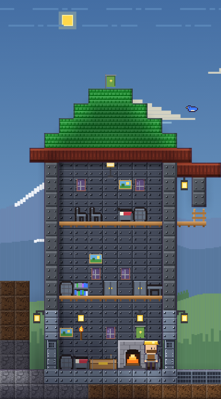

Shop houses
A shopkeeper's house shows its shop level, which you raise at the shop (Upgrade): level 1 wood, level 2 stone, level 3 iron.
Shop upgrades
| Level | Cost | The house |
|---|---|---|
| 1 | Free | A wooden house with a shop room |
| 2 | 400 coins,  Stone brick ×40, Stone brick ×40,  Iron bar ×10 (Town) Iron bar ×10 (Town) | Stone, with a third floor and a bed |
| 3 | 1200 coins, Stone brick ×60,  Gold bar ×10, Gold bar ×10,  Diamond ×2 (City) Diamond ×2 (City) | Iron, with a balcony and hanging lantern, a red tile roof, a roof banner, paintings and rugs |
The house at each level


